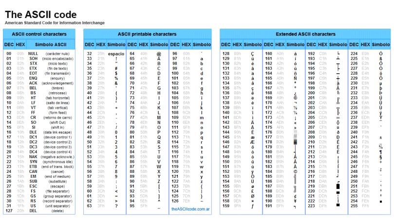
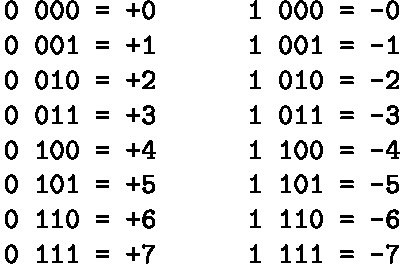
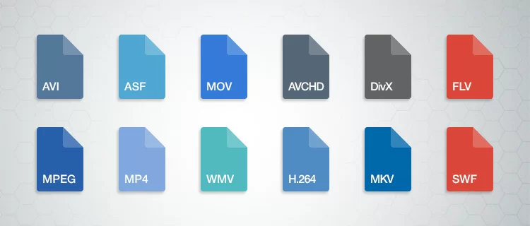
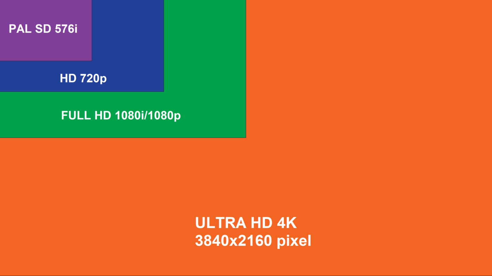

Ascii

ASCII è una codifica a
7 bit che permette di rappresentare 128 caratteri diversi (da 0 a 127).
Ogni carattere è rappresentato da un numero binario a 7 bit (ad esempio, 01000001 per la lettera maiuscola A).
L'ASCII originale è stato progettato negli anni '60 ed è stato ampiamente utilizzato per rappresentare i caratteri alfanumerici,
simboli di punteggiatura, e alcuni caratteri di controllo come ritorno a capo o tabulazione.
La codifica ASCII standard non supporta caratteri di lingue non inglesi o simboli speciali al di fuori di quelli definiti nei primi 128 caratteri.
Unicode (UTF-16):
Unicode è una codifica molto più estesa che consente di rappresentare tutti i caratteri di tutte le lingue del mondo, oltre a simboli, emoji, e caratteri speciali.
UTF-16 è una modalità di codifica di Unicode che utilizza 16 bit (2 byte) per rappresentare ogni carattere. In UTF-16, la maggior parte dei caratteri
comuni richiede 16 bit, ma alcuni caratteri meno comuni possono essere rappresentati con 32 bit (4 byte) utilizzando coppie di surrogati.
Codifiche di testi
- ASCII (American Standard Code for Information Interchange)
- Extended ASCII (o ASCII esteso)L'Extended ASCII utilizza 8 bit, consentendo di rappresentare 256 caratteri.
Oltre ai 128 caratteri originali, include caratteri speciali, simboli e lettere.
- Unicode è un sistema di codifica universale progettato per rappresentare i caratteri di tutte le lingue del mondo.
Numeri Interi e Reali

I numeri interi in informatica sono numeri senza parte frazionaria e possono essere rappresentati come numeri positivi o negativi, incluso lo zero.
Esempi di rappresentazione:
- Un intero a 8 bit in formato signed può rappresentare valori da -128 a +127.
- Un intero a 16 bit può rappresentare valori da -32.768 a +32.767 (signed).
In un computer, i numeri interi vengono rappresentati utilizzando il sistema binario
I numeri reali includono numeri frazionari (decimali) e possono essere rappresentati in vari formati.
In sintesi:
- Interi: rappresentano valori senza decimali, e la loro codifica è semplice, ma limitata dalla dimensione in bit.
- Reali: includono numeri con decimali e sono rappresentati in modo più complesso (floating point), per gestire valori più grandi e con maggiore precisione.

Codifica di video
L'occupazione video è un termine che può riferirsi alla quantità di spazio di archiviazione o banda che un video richiede
a seconda del contesto in cui viene utilizzato. In generale, riguarda quanto "spazio" un file video occupa, sia in termini di storage
(memoria) su un dispositivo sia in termini di banda (larghezza di banda) durante il trasferimento o lo streaming.
Occupazione memoria:
Occupazione video1 = Risoluzione x Profondità x 30(fps) x TempoSecondi
Codifica di immagini
Per codificare un immagine:
| 1 bit |
Bianco e nero |
| 8 bit |
Tonalità di grigio |
| 16 bit |
Radiografie |
| 24 bit |
Colori |
| 48 bit |
Colori A |
Occupazione memoria di un immagine!
Per determinare l'occupazione di
memoria di un'immagine, bisogna calcolare la quantità di memoria 
necessaria per memorizzare tutti i dati che compongono l'immagine stessa. Questo dipende da vari
fattori, tra cui la risoluzione dell'immagine, la profondità di colore (bit per pixel) e il formato dell'immagine.
Esempio: Risoluzione data 580x640 a tonalità di grigio(8bit) in MB
occupazione1 = 580x640x8
occupazione2 = occupazione1 : 8 = byte
occupazione3 = occupazione2 : 2^10 = kb
occupazione4 = occupazione3 : 2^10 = Mb
| ciò significa che bisogna fare: |
| occ1 = risoluzione x profondità(n bit) |
| occ2 = occ1 : 8 = byte |
| occ3 = occ2 : 2^10 = kb |
| occ3 = occ3 : 2^10 = mb |
| ecc.. |
TECNICA VETTORIALE!
La tecnica vettoriale ha la caratteristica che quando l'immagine viene zoomata non si sgrana.
Questa tecnica viene utilizzata nelle aziende per creare loghi, questo perché il logo è un
simbolo molto importante per un azienda perché da valore!
- Gli algoritmi di compressione servono per ridurre lo spazio che occupa un file.
Ad esempio "zip". Ci sono due tipi di compressione: Kossy(jpeg) e Loss ness(gif e png).
BITMAP!
Una bitmap (abbreviata in BMP) è un tipo di formato di immagine
digitale che rappresenta un'immagine come una matrice di pixel,
dove ogni pixel è un punto dell'immagine che contiene
informazioni su colore e luminosità. Il termine "bitmap" deriva dalla combinazione delle parole
bit (la più piccola unità di informazione, che può essere 0 o 1) e map (mappa),
indicando che l'immagine è una mappa di bit.
In pratica, una bitmap memorizza ogni singolo pixel dell'immagine come una
sequenza di bit, che definisce il colore di quel pixel.
Ogni pixel è rappresentato con una quantità di bit che
dipende dalla profondità di colore dell'immagine (ad esempio, 24 bit per una rappresentazione
a colori RGB standard, dove ogni canale di colore (rosso, verde, blu) è rappresentato da 8 bit).
Caratteristiche principali della bitmap:
Risoluzione: La qualità dell'immagine dipende dalla risoluzione, che è il numero di pixel in orizzontale e verticale (es. 1920x1080). Maggiore è la risoluzione, maggiore è la qualità e il dettaglio dell'immagine.
Profondità di colore: Indica quanti bit sono utilizzati per rappresentare il colore di ciascun pixel. Le immagini a 24 bit, ad esempio, usano 8 bit per ogni colore primario (rosso, verde e blu), permettendo una gamma di 16,7 milioni di colori.
Dimensione del file: Poiché ogni pixel è memorizzato come un dato, le immagini bitmap tendono a essere più pesanti rispetto ad altri formati, come JPEG o PNG. La dimensione del file dipende dalla risoluzione e dalla profondità di colore.